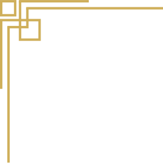

1.Pilot projekt
Tema 5: Indhold har været det mest udfordrende for mig fordi vi har skulle lære hele premiere pro software og hvordan man klipper både film og lyde. Det havde jeg aldrig prøvet før.
Pilotprojekt var gruppearbejde indenfor vores egen gruppe. Sammen med Isabell gik vi ud og interviewede Kira som er frisør samt filme hende og b-rolls. Vi tog også mage billeder. Det vi har lært efter at have prøvet at klippe filmen var at det ville have været smart at filme b-rolls både horizontalt og vertikalt, altså de samme shots. Det ville have gjort klipningen meget nemmere. Vi glemte også at sync lyden.
Min metode har været at klippe i lyden og så finde klips som passer fint ind.
Link til websitet.PILOT video
Click on me to go to the video 2.Redesign opgave
Redesign projekt var gruppearbejde som krævede at vi sammen lavet gruppekontrakt og fandt en virksomhed som havde brug for et redesign. Vi har fået lavet et trello board og holdt scrum møder hverdag. Vi valgt Isabellas tantes fodklinik i Valby.
Vi skulle lave noget desk research for at starte med. Vi indelte opgaverne mellem hinanden og havde et fælles google doc for at dele det vi lavet med de andre, samt en messenger gruppe for at kommunikere hurtigt.
Vi fik en lille interview af Isabellas tante og lavet bert test på den gammel website for at starte med. Vi fik ikke nok svar på den for at det kunne give mening at bruge dataen. Heuristisk test og lighthouse test blev lavet mens jeg lod syg sammen med min datter (igen).
Det var meget krævende at arbejde i gruppe i forhold til selv, jeg vil sige at ca. halvdelen af arbejdet var at blive enig om tingene.
Vi var ude og filme og tage billeder og snakke med Isabellas tante. Med alle vores billeder og hendes ideer lavet vi en palette for websitet. Vi inddelte de forskellige sider af websitet mellem hinanden sådan at vi havde en hver. Jeg fokuserede på behandlingernes side. Jeg lavet et burger menu før vi blev undervist i det, det lykkes men det var måske et fejl fra min side af. Jeg har lært at skulle tage tingene lidt af gang og stille og roligt samt at skulle dokumentere absolut alt af mit arbejde for at kunne fortælle det til andre.
Det har været det mest udfordrende for mig i hele semestret, derfor har jeg også lært meget. Vores dokumentation valgt vi at lave på slides.
Jeg var på teams på dagen hvor vi skulle fremlægge fordi jeg stadig lod syg hjemme. Og det gik fint selvom det var lidt forvirrende. Det at skulle præsentere noget som har taget så lang tid og så mange overvejleser i så kort tid er meget svært. Jeg lærte der at komme ind til kærnen og udvlægle det vigtiste.
Pga. af sygdommen har jeg ikke lavet min side så god som jeg synes den kunne have været blevet. Den mangler noget mere responsivt kodning og sikkert noget mere css for at være pænere og mere funktionelt.
Vi brugte også for første gang et fælles git repo, det er meget spændende at se alle de mugligheder der er med den funktion. Det er helt klart et rigtig vigtigt værktøj som giver mange mugliheder og gøre det meget nemmere at arbejde fælles om det samme ting.